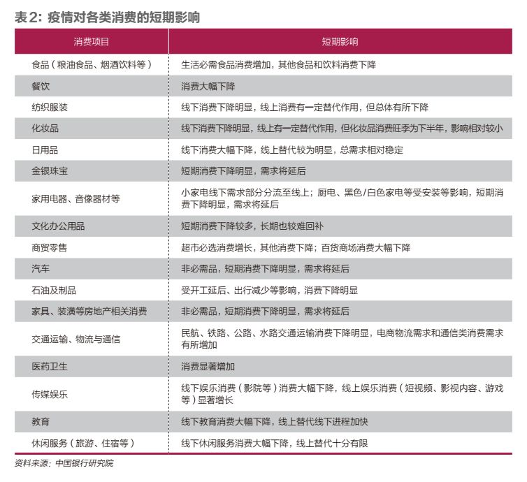

疫情中受创行业里的他们：复工无期 月亏房租十几万 期待扶持政策中守望春天 - 经济观察网 － 专业财经新闻网站
原文链接 备份链接 经济观察报 记者 姜鑫 一、大年初一“失业”了 “本来想2020年咸鱼翻身，没想到直接粘锅了————致所有旅游行业从业者。” 回家的路上，边丽在朋友圈中发出了上面一条朋友圈。 大年初二，边丽在一路电话、邮件中回到了家， …

疫情对经济带来负面影响的同时，也促使相关行业加速升级。此次疫情或成零售行业进化和变革的“催化剂”，加快新零售模式崛起

2月14日，武汉武昌区街头的蔬果店。 摄影／《财经》记者 王小
文 | 周景彤 叶银丹
2019年12月底开始爆发的新冠肺炎疫情，将对中国经济带来较大的短期冲击。由于疫情爆发正值春节消费旺季，较之于投资和出口，本次疫情对短期消费的影响将更大。
但疫情对消费的影响“危”与“机”并存。短期来看，疫情将会对各类消费产生结构性冲击，消费增速明显下降；但疫情消退后，预计消费将较快反弹并回归正常增速。
从中长期来看，疫情将推动中国居民消费行为变化和刺激新消费增长点，加速无人零售、生鲜电商等新零售浪潮的到来。
我们建议，银行业短期内，敏捷反应，服务于国家防控疫情和经济社会秩序恢复大局，加强对中小企业尤其是消费行业中小企业，以及防疫相关企业和人员的金融支持保障力度；中长期，抓住本次疫情危机可能酝酿的消费零售行业变革，提前布局。
本次疫情对消费的冲击远大于非典
疫情爆发时间为消费旺季，且疫情蔓延范围更大，防控措施更强。从疫情影响时间上来看，本次新型冠状病毒肺炎疫情主要集中于2020年一季度，正值春节、元宵等传统消费旺季，因此对消费冲击较大；而2003年非典爆发时间为春季，对消费的影响相对较小。从疫情感染人数和蔓延范围来看，本次疫情受感染人数远超非典，截至2020年2月12日，全国确诊病例为59741例，而非典确诊人数截至2003年8月16日仅为5327例。此外，本次疫情蔓延的范围也大于非典。非典主要爆发于广东省和北京市，对全国其他地区的生产经营和生活影响较小；而本次疫情不仅疫情爆发地湖北省受灾特别严重外，全国绝大部分地区均受灾较重（西藏、新疆、青海、甘肃、内蒙古等地相对较轻）。
从疫情的防控措施来看，非典时期，仅疫情中心广东省和北京市采取了较为严格的防控措施，其他地区的生产经营、教学、生活等活动并未大范围受影响。而本次疫情恰逢春运人口大流动时期，为防止疫情叠加春运造成失控，各地均采取了封路、关停店铺工厂、延迟开业开工、封闭式管理小区等非常强硬的防控措施。这些强硬措施在有力阻断病毒传播途径的同时，也对消费造成巨大打击。
当前中国消费结构中受疫情影响更大的服务消费和可选消费占比更高。
较之于2003年非典时期，当前中国居民收入水平显著提高，恩格尔系数明显降低。全国城镇居民人均可支配收入由2003年的8472元增加到2019年的42359元。全国城镇居民家庭的恩格尔系数（食品支出占家庭总消费支出比重）和农村居民家庭恩格尔系数分别由2003年的37％和46％下降至2019年的28％和30％。
全国居民消费结构明显升级，服务类、可选类消费占比显著提高。随着收入的不断提高，中国居民消费正在由原来的“温饱型”转向“小康型”。一是可选消费比重大幅提高。对比2003年和2019年社会消费品零售总额的结构发现，2019年居民消费中的必选消费占比由2003年的31％下降至22％，可选消费占比显著提高，例如汽车相关消费占比由2003年的25％提高至2019年的40％（表1）。二是服务消费比重持续提高，形成服务消费和商品消费双轮驱动的格局。2019年全国居民人均消费支出中，服务消费支出占比为45.9％，比上年提高1.7个百分点。

可选消费、服务消费受疫情影响更大。当疫情冲击来临，消费不可避免地减少时，米面粮油等必选消费相对稳定，而汽车、旅游等可选消费将受到更大冲击。此外，服务消费多为非必需品且多依赖于面对面提供、即时发生，因而较之于商品消费，受疫情冲击更加严重。据此判断，本次疫情对消费的冲击将大于非典时期。
未来消费将出现较强反弹
短期疫情对各类消费结构性冲击明显，预计消费增速将大幅下降。
非典疫情在其峰值期间（5月）造成当月消费增速下降5个百分点至4.3％。预计本次疫情对消费的冲击将大于非典时期。预计2020年1月－2月消费将降至3％左右，后期消费增速恢复时间取决于疫情控制情况。
但疫情对消费的影响将是短期的、结构性的（表2）。

一是疫情对必需品消费的影响小于对非必需品消费的影响。
二是疫情对时间可选型非必需品消费的影响小于对时间不可选型非必需品消费的影响。以旅游消费和办公用品消费为例，人们因疫情推迟的旅游消费需求将在疫情结束后得到释放，因此疫情对全年旅游消费的影响相对较小；但人们因疫情减少的办公用品消费，较难在疫情结束后回补，因此这部分消费就失去了。
三是疫情对线上替代性较强消费的影响小于对线上替代性较弱消费的影响。例如主题公园等休闲娱乐消费难以进行线上替代，消费损失较多；服装鞋帽购物等消费易进行线上替代，影响相对较小。
未来各类消费增速的恢复性增长可期。疫情期间被抑制的部分消费需求并未消失而只是延后。因疫情防控的需要，居民减少外出大幅抑制其当前的消费需求，这部分被抑制的消费需求有望在疫情结束后得到有效释放。以非典为例，2003年7月疫情消退后，前期被抑制的消费需求大量释放，其中，零售品消费中回落幅度较大的服装鞋帽、针纺织品类，体育、娱乐用品类，文化办公用品类等都恢复至疫情前甚至更高水平。
政府多措并举为消费行业企业纾困，预计疫情结束后供给端将较快恢复，使消费需求得到较好满足。疫情发生以来，中央和各地纷纷出台各类措施，缓解中小企业、尤其是受疫情重创的消费行业中小企业的资金压力，帮助中小企业渡过难关。例如，2月12日召开的中央政治局常委会就明确提出要“完善支持中小微企业的财税、金融、社保等政策”。2月11日召开的国务院常务会议要求“各地各部门要建立企业应对疫情专项帮扶机制，纾解企业特别是民营、小微企业困难”。银保监会要求各银行保险机构，对于受疫情影响较大的批发零售、住宿餐饮、物流运输、文化旅游等行业，以及有发展前景但暂时受困的企业，不盲目抽贷、断贷、压贷；并鼓励通过适当下调贷款利率、完善续贷政策安排、增加信用贷款和中长期贷款等方式，支持相关企业渡过难关。各类纾困措施的落地和实施将较好地保护消费行业企业有生力量，待疫情消退后，使得供给端较快恢复，有效满足疫情过后反弹的消费需求。
受疫情重创的餐饮和旅游等消费将在疫情结束后出现明显反弹。从近几年的消费需求看，外出就餐和旅游已成为很多人的日常生活方式。2019年，全国餐饮收入46721亿元，比上年增长9.4％；国内旅游人数将超过60亿人次，比上年增长5亿人次左右。春节通常是人们释放旅行和餐饮消费需求的重点时段，而2020年春节由于疫情防控需要封闭在家，旅游和外出就餐的消费需求无法实现，反而进一步刺激了人们的消费欲望。疫情结束以后，相关消费需求将呈现报复性反弹。餐饮消费方面，预计疫情结束后的1个－2个月时间内将出现小高峰，而后转为9％－10％左右的正常增速。旅游消费方面，2020年“五一”“端午”和暑期将成为释放疫情累积的旅游消费需求的重点时段，有望出现旅游小高峰。此后的“十一”黄金周，旅游消费将会恢复到正常增长区间。
疫情催生“宅经济”
从历史来看，疫情对经济带来负面影响的同时，也往往促使相关行业加速升级。例如，1928年美国金融危机，催生了连锁超市；2003年非典疫情，诞生了阿里巴巴等一批线上零售巨头企业。此次疫情也是“危”中藏“机”，疫情或成零售行业进化和变革的“催化剂”，加快新零售模式崛起，为消费零售带来新机遇。
一是线上线下融合零售模式（O2O模式）成趋势。疫情期间，各大商超和便利店为减少人员不必要的接触，同时压缩供应和物流成本，都推出了预约制到店自提、无接触配送到家等新模式，并大获成功。以苏宁菜场为例，疫情期间苏宁菜场的单店订单量环比增长7倍－10倍左右。未来随着线上直播、社群销售等模式的不断发展和成熟，O2O零售模式将成为实体零售行业新趋势。
二是“无接触”概念下无人零售进程再提速。近年来我国无人零售业务发展较快，无人售货机、无人便利店和无人超市等不断亮相。但较之于发达国家，我国的无人零售还具有很大发展空间（表3）。本次疫情中“无接触”概念走红，我国无人零售进程再次提速，医院和疫情严重地区启用大量无人配送和无人超市。例如，武汉火神山医院无人超市，部分其他医院配有机器人送物送餐；美团率先在武汉、北京两地试点运营“美团智能取餐柜”等。这些无人配送和无人零售实践既有助于积累技术经验，也有助于提高大众对无人零售的接受度，加快无人零售普及进程。

三是生鲜电商迎来新风口。疫情之前，大部分有过网购经验的消费者并没有线上购买生鲜食材的习惯，而在疫情倒逼下，生鲜电商成为城市人群的买菜首选。例如每日优鲜在新年2020年前5天的生鲜在线订单是上年同期的4倍，春节7天假期期间，更是卖出了4000万件食品；京东生鲜在从2020年1月24日至2月2日10天期间，销量同比增长215％。疫情期间，14天的居家隔离时长不仅增强消费者对生鲜电商的信赖和认可，还有可能使消费者养成在线采购生鲜的消费习惯，未来生鲜电商发展可期。
建议商业银行短期内加强对中小企业尤其是消费行业中小企业，以及防疫相关企业和人员的金融支持保障力度，服务好国家疫情防控和经济社会秩序恢复大局。中长期，建议抓住本次疫情危机酝酿的消费零售行业变革带来的机遇，提前布局。同时，要多措并举加强风险防范，牢牢守住不发生系统性金融风险底线。
一是加大对受灾严重的餐饮、旅游、交通等行业的金融支持力度和灵活性。一方面，根据中小企业实际能力和疫情带来的暂时困难，通过提高贷款额度、延长贷款期限、下调利率等措施助其渡过难关；另一方面，根据各企业具体情况，秉承“特事特办”原则，积极采取更多创新举措，量身打造综合金融服务方案，帮助企业恢复生产经营。
二是加大对防疫物资生产、民生保障等相关企业和防疫一线人员的金融保障力度。一方面，通过提高贷款额度、提供专项贷款等方式加大对药品、医疗器材等防疫物资生产企业，以及物流运输、超市等民生保障企业的金融支持力度，助其尽快恢复和扩大产能，提高防疫物资供给和居民生活保障。另一方面，加大对防疫相关人员金融保障力度，例如对参加一线防疫工作的医护人员、民警、社区工作人员等提供免费不记名保险。
中长期抓住消费升级和零售变革机遇，提前布局。
一是加快升级型消费领域布局。通过与升级型消费领域领导企业建立合作等方式，积极布局旅游、医疗、养生等升级型消费领域，推出更加丰富的消费金融产品，为居民消费升级提供更好的金融支持。
二是加快线上线下场景渠道建设，打造新型互联网金融生态平台。紧跟零售消费线上线下融合趋势，重点以App为线上主要场景平台，以支付和信贷为核心功能，不断丰富线下消费场景，完善金融功能。
三是加强与大型电商企业的合作与开发。积极与龙头电商企业建立长期战略合作伙伴关系，并不断拓展合作深度和广度，寻求商业模式、征信机制等多方面突破。
四是聚焦金融科技，优化消费金融服务体验。一方面，利用互联网技术突破地理限制的优势，更深层次地切入细分消费场景，提供嵌入式综合金融服务，实现客群、渠道、产品等多维度价值发掘与创造。另一方面，建立用户体验监测体系和反馈机制，获取用户直接反馈信息，不断优化客户消费金融服务体验。
（作者周景彤为中国银行研究院研究员，叶银丹为中国银行研究院博士后；编辑：王延春）


▲点击图片查看更多疫情报道
责编 | 黄端 duanhuang@caijing.com.cn
本文为《财经》杂志原创文章，未经授权不得转载或建立镜像。如需转载，请在文末留言申请并获取授权。
原文链接 备份链接 经济观察报 记者 姜鑫 一、大年初一“失业”了 “本来想2020年咸鱼翻身，没想到直接粘锅了————致所有旅游行业从业者。” 回家的路上，边丽在朋友圈中发出了上面一条朋友圈。 大年初二，边丽在一路电话、邮件中回到了家， …
原文链接 备份链接 文 | 李湛 蔡娜 2003年的非典疫情影响周期超过半年，期间抑制消费，中国第三产业GDP受波及影响长达两个季度。另一方面，非典疫情影响社会消费数据仅是短期性，待疫情控制后迅速回升。 此次新冠疫情发生于春节旺季，短期 …
原文链接 备份链接 作者：孙梅欣 “ 线上医疗、云办公、远程教育等行业潜藏扩张机遇。 ” 随着2月中上旬企业陆续复工，疫情对商业地产的影响正在逐步展现。 戴德梁行近期的报告显示，针对近期疫情对中国经济的影响，牛津经济研究院(Oxford …
原文链接 备份链接 _ 值得大力肯定的是，此次疫情爆发后政策应对果断而有效。但本次疫情也凸显了一些中国医疗体系仍待完善之处，其中也包括医护人员及相关用品的长期短缺的问题等 _ 文 | 梁红 截至2月4日24时，中国内地已确诊24324例新 …
原文链接 备份链接 作者：任尚坤 来源：*商业人物*（ID：*biz-leaders）* 北京时间1月31日凌晨，世界卫生组织召开记者会宣布：新型冠状病毒疫情被列为“国际关注的突发公共卫生事件”（Public Health …